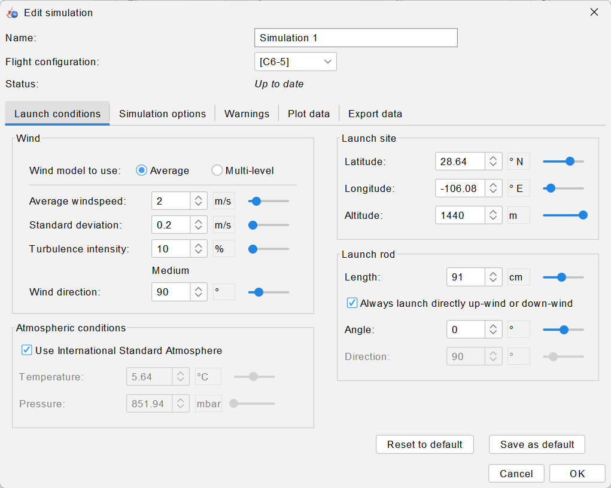
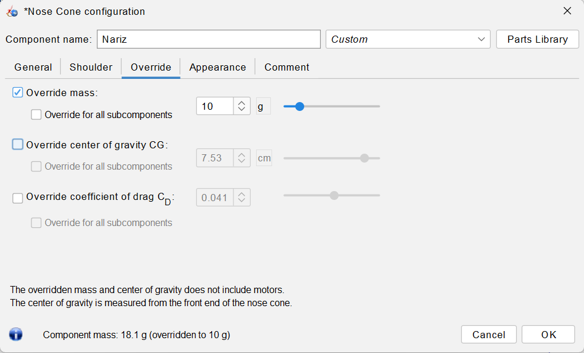
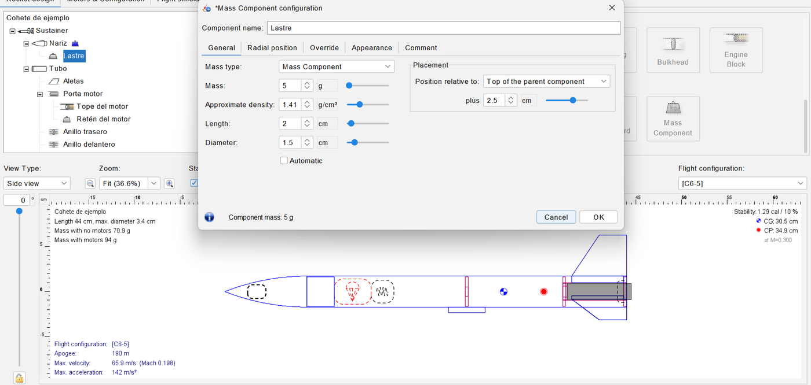
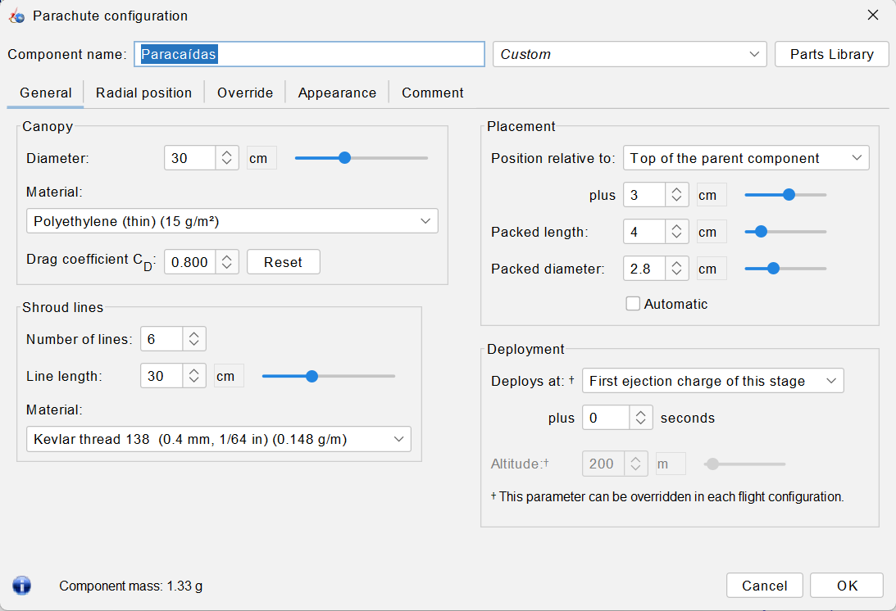
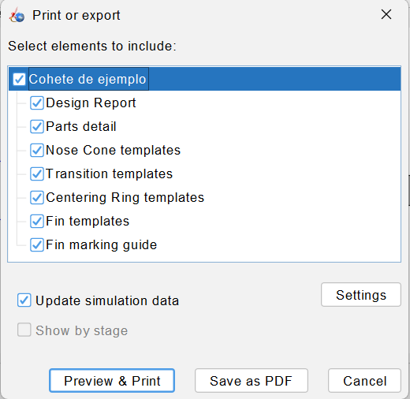
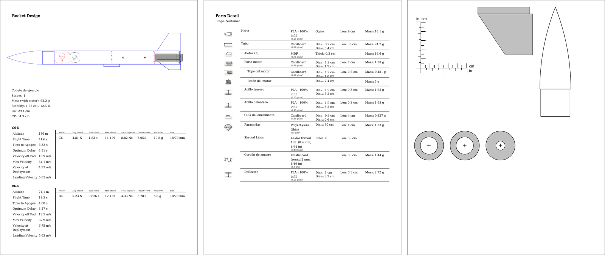
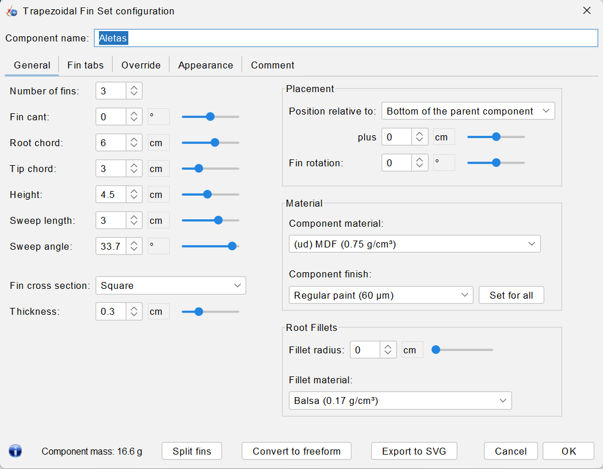
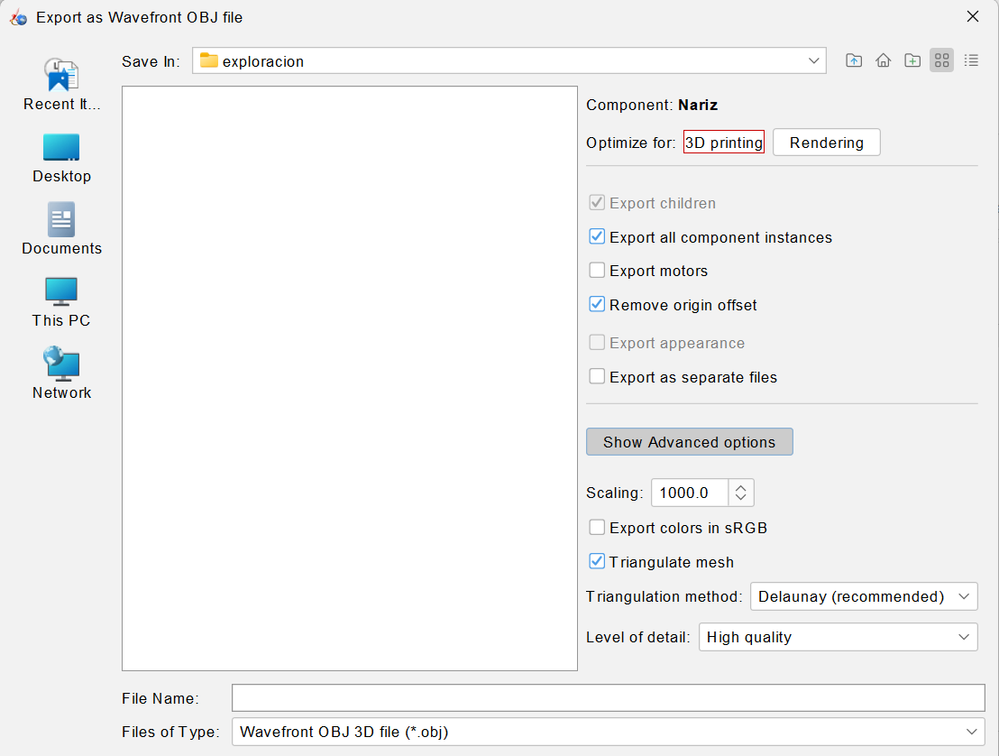

Tuning the Design: Wind, Nose Weight, Parachute and Build Templates
The rocket flies in the simulation; now it has to fly on the real field, with wind, a printed nose that may not weigh what the model says and a parachute that decides how far it drifts. The last step takes the design out of OpenRocket: templates, a fin outline and a 3D model of the nose.
OpenRocket · Tutorial 1.3
Ajustar el diseño: viento, lastre, paracaídas y plantillas para construir
El cohete ya vuela en la simulación; ahora tiene que volar en el campo real, con viento, con una nariz impresa que quizá no pese lo que dice el modelo y con un paracaídas que decide hasta dónde se lo lleva el aire. El último paso saca el diseño de OpenRocket: plantillas, el contorno de las aletas y el modelo 3D de la nariz.
OpenRocket · Tutorial 1.3
Den Entwurf abstimmen: Wind, Ballast, Fallschirm und Bauvorlagen
Die Rakete fliegt in der Simulation; jetzt muss sie auf dem echten Feld fliegen, mit Wind, mit einer gedruckten Spitze, die vielleicht nicht so viel wiegt wie im Modell, und mit einem Fallschirm, der bestimmt, wie weit sie abtreibt. Der letzte Schritt bringt den Entwurf aus OpenRocket heraus: Schablonen, Flossenkontur und ein 3D-Modell der Spitze.
Estimated reading: 50 minLectura estimada: 50 minLesedauer: ca. 50 minLevel: undergraduateNivel: licenciaturaNiveau: BachelorVerified on OpenRocket 24.12 (Windows 11)Verificado en OpenRocket 24.12 (Windows 11)Geprüft mit OpenRocket 24.12 (Windows 11)
Full English translation in preparation. Each section below carries a summary of its content; the complete text, figures and tables are available in the Spanish version, which the ES button above selects.
Simulate the design with more wind and a longer rod, enter the measured mass of a part and add nose ballast, size the parachute, check the drift against the NAR field size, and export the PDF templates, the fin SVG and the nose OBJ for building.
The idea
What each adjustment changes
Four formulas anchor the guide: the angle of attack at rod exit, arctan(w/v); the centre of gravity as a mass-weighted mean; the descent rate inversely proportional to the parachute diameter; and the drift as wind speed times descent time minus the upwind climb.
Step 1
The same rocket with more wind
From 0 to 8 m/s of wind the apogee of the C6-5 drops only from 188 to 170 m, but the stability margin at rod exit falls from 1.49 to below 0.3 calibers and the drift grows from 0 to about 190 m.
Step 2
A longer launch rod
A 122 cm rod raises the rod exit speed from 13.9 to 15.5 m/s and meets the 15 m/s rule of thumb; the same wind then reaches the rocket at a smaller angle.
Step 3
The real mass of the nose, and ballast
Override mass enters the weighed mass of a part. A 10 g nose instead of 18 g lowers the static margin with the C6-5 to 0.85 calibers; 5 g of ballast in the tip restore 1.29. The hand calculation agrees with OpenRocket.
Step 4
The size of the parachute
The descent rate times the diameter is constant: 7.95 m/s with 20 cm, 5.32 with 30 cm, 3.58 with 45 cm. A larger parachute lands softer but drifts much farther.
Step 5
B or C: how much wind fits in the field
With the launcher in the middle of the NAR minimum field (122 m for C, 61 m for B), the 30 cm parachute keeps the rocket inside up to about 3 m/s of wind with either motor.
Step 6
Templates, fin outline and nose model
Print design info saves a PDF with a summary, the parts list and 1:1 templates of fin, nose profile and rings; Export to SVG writes the fin outline in millimetres for laser cutting; Export as OBJ writes the nose as a closed solid for the 3D-printing slicer.
Step 7
The final check of the design
A final table checks the design against the rules of thumb and the NAR code: margin, rod exit speed, deployment speed, descent rate, drift and wind.
Suggested practice
Your rocket on a windy day
Take your own design to a day with 4 m/s of wind and find a motor and parachute that keep it inside the field, predicting the drift before simulating.
Key points
What to keep from this guide
Wind lowers the margin more than the apogee; the weighed mass replaces the modelled one; the parachute trades landing speed for drift; the field limits the wind; the files for the workshop come out of OpenRocket at true scale.
Common mistakes
Where OpenRocket does not do what one expects
Changing the wind in one simulation only, trusting the static margin on a windy day, leaving the modelled mass after weighing a part, printing the templates scaled to the page, and expecting the OBJ nose to have the model's wall.
Sources
References
OpenRocket documentation; Niskanen (2009); NAR Model Rocket Safety Code; Estes launch equipment.
Objetivos de aprendizaje
Qué se debe poder hacer al terminar
En el tutorial 1.2, el cohete voló en Chihuahua con 2 m/s de viento, una nariz que pesa exactamente lo que calcula OpenRocket y un paracaídas de 30 cm. El día del lanzamiento puede haber más viento, la nariz impresa puede pesar otra cosa y el campo tiene un tamaño. Esta guía prueba el diseño contra esas tres cosas y termina sacándolo de OpenRocket para construirlo. Al terminar debe ser posible:
Simular el mismo cohete con distintos vientos y explicar por qué el viento baja el margen de estabilidad al dejar la varilla.
Decidir el largo de la varilla de lanzamiento.
Escribir en OpenRocket la masa medida de una pieza y, si hace falta, agregar lastre en la nariz.
Elegir el diámetro del paracaídas sabiendo lo que se gana y lo que se pierde.
Comprobar que el cohete aterriza dentro del campo que exige el código de seguridad de la NAR.
Obtener de OpenRocket las plantillas en PDF, el contorno de las aletas en SVG y la nariz en OBJ.
Qué hace falta. OpenRocket 24.12 y el diseño del tutorial 1.2, propio o el de la guía (cohete-vuelo.ork). El diseño de esta guía, con el C6-5 y el B6-4 simulados con 0, 2 y 4 m/s de viento, se puede descargar: cohete-ajustado.ork; también el contorno de la aleta (aleta.svg) y la nariz (nariz.obj).
La idea
Qué cambia cada ajuste
Cada ajuste de esta guía mueve una cantidad que se puede estimar a mano antes de simular. Las cuatro fórmulas siguientes sirven para saber qué esperar y para reconocer cuándo una simulación da algo raro.
El viento y el ángulo de ataque
Mientras el cohete está en la varilla, la varilla lo guía. Al dejarla, el aire le llega con la suma de dos velocidades: la del cohete hacia arriba, \(v_r\), y la del viento de costado, \(w\). El ángulo entre el eje del cohete y ese aire es el ángulo de ataque:
Con 2 m/s de viento y los 13.9 m/s del C6-5 al dejar la varilla, \(\alpha\) = 8.2°. Con ángulo, el cuerpo del cohete también empuja aire de lado, la fuerza normal crece delante del CG y el centro de presión se adelanta: el margen baja. Por eso el instante más delicado del vuelo es la salida de la varilla, y la ecuación dice las dos maneras de protegerlo: menos viento o más velocidad.
El centro de gravedad con una pieza distinta
El CG es el promedio de las posiciones de las piezas, pesado con sus masas, y el margen es la distancia del CG al CP medida en diámetros \(d\):
Para cambiar una pieza no hace falta rehacer la suma: se resta su producto \(m\,x\) viejo y se suma el nuevo. Una masa delante del CG lo adelanta y sube el margen; el CP no se mueve, porque depende sólo de la forma.
El paracaídas
El tutorial 1.2 comprobó que el descenso es estacionario, \(v_d = \sqrt{2mg/(\rho C_D A)}\). Como el área es \(A = \pi D^2/4\), la velocidad es inversamente proporcional al diámetro:
Bajo el paracaídas, el cohete se mueve con el aire. Si baja desde el apogeo \(h\) a \(v_d\), tarda \(h/v_d\), y en ese tiempo el viento lo lleva \(w\,h/v_d\). Pero antes, al subir, el cohete se inclinó hacia el viento como una veleta y abrió el paracaídas a una distancia \(x_c\) del lado de donde viene el aire. La distancia del lanzador al punto de aterrizaje es, aproximadamente,
\[ x \;\approx\; \frac{w\, h}{v_d} \;-\; x_c \qquad (4) \]
El primer término manda: la deriva crece con el viento, con la altura y con el tamaño del paracaídas.
Paso 1
El mismo cohete con más viento
El viento es una condición de lanzamiento, como la altitud: se cambia en cada simulación.
Abrir el diseño del 1.2 y pasar a la pestaña Flight simulations.
Seleccionar la simulación del [C6-5] y hacer clic en Edit simulation. Se abre en Launch conditions.
En el cuadro Wind, escribir 4 en Average windspeed. La Standard deviation cambia sola a 0.4 m/s: la liga la Turbulence intensity, que se queda en 10 %.
OK: la simulación se corre y su fila de la tabla cambia. Repetir con otros vientos y con el [B6-4].
Para ver el margen al dejar la varilla, exportar el vuelo como en el 1.2 (Plot / Export ▸ Export data) y leer la columna Stability margin calibers en el primer renglón después del evento LAUNCHROD.

Figura 1.Dónde se pone el viento.Edit simulation ▸ Launch conditions. A la izquierda, el cuadro Wind: velocidad media, desviación estándar y la intensidad de la turbulencia (que las liga: 10 % de 2 m/s son 0.2 m/s) y la dirección de donde viene. A la derecha, la varilla: con Always launch directly up-wind or down-wind marcado, una varilla inclinada se orienta según el viento.
La tabla 1 junta los vuelos con 0 a 8 m/s. Cada simulación se corrió tres veces, porque el viento lleva turbulencia aleatoria y cada corrida da algo distinto.
Viento (m/s)
Ángulo de ataque, C6-5 (°)
Margen al dejar la varilla, C6-5 (cal)
Apogeo, C6-5 (m)
Deriva, C6-5 (m)
Margen, B6-4 (cal)
Apogeo, B6-4 (m)
Deriva, B6-4 (m)
0
0.0
1.49
188
0
1.67
75
0
1
4.1
1.22
187
19–24
1.38
75
9–10
2
8.2
0.94
185
41–43
1.14
74
17–20
3
12.2
0.85
184
62–68
0.89
73
28–29
4
16.1
0.62
179
82–84
0.77
72
36–40
5
19.8
0.49
176
101–110
0.65
71
45–47
6
23.4
0.43
174
134–137
0.56
70
56–57
7
26.8
0.27
173
165–192
0.51
70
65–73
8
29.9
0.29
170
167–226
0.40
69
78–87
Tabla 1.El mismo cohete con más viento. Promedio de tres corridas de cada simulación; la deriva va con su intervalo, porque la turbulencia la cambia de una corrida a otra. El ángulo es el de la ecuación (1) con la velocidad al dejar la varilla (13.9 y 13.5 m/s).
Lo primero que sorprende es lo poco que cambia el apogeo: de 188 a 179 m con 4 m/s, y 170 m con 8. Lo que cambia mucho son otras dos cosas.
El margen al dejar la varilla (figura 2). El ángulo de ataque sigue la ecuación (1): 8.2° calculados contra 8.7° simulados con 2 m/s, y 16.1° contra 16.0° con 4 m/s. Con ese ángulo, el margen del C6-5 baja de 1.49 calibres sin viento a 0.94 con 2 m/s, 0.62 con 4 y 0.43 con 6. El B6-4 sale un poco mejor (1.14 y 0.77), porque su margen estático es mayor.
La deriva (figura 3): 42 m con 2 m/s, 83 con 4 y 136 con 6; casi proporcional al viento, como dice la ecuación (4).
Figura 2.El viento se come el margen. Margen de estabilidad al dejar la varilla, columna Stability margin calibers, promedio de tres corridas. Sin viento es el estático del 1.1 (1.49 y 1.67 a esa velocidad); con viento, el aire le llega al cohete de lado, el ángulo de ataque crece (ecuación 1) y el CP se adelanta. Con el C6-5 baja de 1 calibre desde 2 m/s.Figura 3.El viento se lleva el cohete. Distancia horizontal entre el lanzador y el punto de aterrizaje, columna Lateral distance al final de cada vuelo, promedio de tres corridas. Las líneas punteadas son la mitad del campo mínimo de la NAR: la distancia del centro a la orilla, si el lanzador está en medio.
Con la ecuación (4) se comprueba la deriva del C6-5 con 2 m/s y el paracaídas de 30 cm. El cohete llega a 185.4 m y baja a 5.32 m/s: tarda 34.9 s, y el viento lo lleva \(2 \times 34.9 = 69.7\) m. Al abrir el paracaídas estaba 26.9 m del lado del viento. La ecuación da \(69.7 - 26.9 = 42.8\) m; la simulación, 40.3 m. La diferencia, de unos metros, es el tiempo que tarda el paracaídas en tomar la velocidad del viento.
Más viento, más velocidad al abrir. La velocidad al abrir el paracaídas sube de 5.0 m/s sin viento a 8.1 m/s con 4 m/s, aunque el retardo es el mismo. El cohete se inclina contra el viento al subir y llega al apogeo todavía con velocidad horizontal: deja de subir, pero no está quieto.
Con mucho viento, las corridas se separan. Con 7 m/s, la deriva del C6-5 fue de 165 a 192 m en tres corridas de la misma simulación. Una sola corrida no basta para decidir con viento fuerte: hay que correr varias y quedarse con la peor.
Paso 2
Una varilla más larga
La ecuación (1) dice que, para el mismo viento, más velocidad al dejar la varilla es menos ángulo. La velocidad la da la varilla: el motor empuja más tiempo dentro de ella. El tutorial 1.2 usó la varilla de 91 cm (36 in) de la plataforma Porta-Pad II de Estes; aquí se prueban también 122 y 152 cm, en Launch rod ▸ Length.
Varilla
Velocidad al dejarla, C6-5 (m/s)
Ángulo con 2 / 4 m/s (°)
Margen con 2 / 4 m/s, C6-5 (cal)
Velocidad al dejarla, B6-4 (m/s)
Margen con 2 / 4 m/s, B6-4 (cal)
91 cm (3 ft)
13.9
8.2 / 16.1
0.92 / 0.61
13.5
1.14 / 0.76
122 cm (4 ft)
15.5
7.4 / 14.5
1.02 / 0.80
15.2
1.21 / 0.92
152 cm (5 ft)
16.3
7.0 / 13.8
1.06 / 0.74
16.7
1.23 / 0.97
Tabla 2.Una varilla más larga. Una corrida por caso. Con más velocidad al dejar la varilla, el mismo viento llega con menos ángulo (ecuación 1). El margen se lee en un instante con turbulencia aleatoria: compárense las tendencias, no la segunda cifra.
Con 122 cm, el C6-5 deja la varilla a 15.5 m/s y el B6-4 a 15.2 m/s: ya se cumple la regla práctica de los 15 m/s que el 1.2 no alcanzaba. Con 4 m/s de viento, el ángulo baja de 16.1° a 14.5°, y el margen al dejar la varilla sube. Con 152 cm la ganancia es menor (16.3 m/s), porque el empuje del motor ya bajó de su pico cuando el cohete recorre esa distancia.
La varilla es del campo, no del cohete. El largo se decide con el equipo de lanzamiento que se va a usar. Una varilla de 1/8 in más larga se flexiona más, y una más gruesa tiene que caber en la guía de lanzamiento del cohete: la del diseño del 1.1 tiene 0.4 cm de diámetro interior, y una varilla de 3/16 in (0.48 cm) ya no entra.
Paso 3
La masa real de la nariz y el lastre
OpenRocket calcula la masa de cada pieza con sus medidas y la densidad de su material. La nariz del 1.1 es de PLA al 100 % con pared de 1.5 mm: 18.1 g. Una nariz impresa casi nunca pesa eso: el programa de impresión decide las paredes y el relleno. Lo que se hace es pesar la pieza ya hecha y escribir su masa.
Pestaña Rocket design; doble clic en Nariz.
Pestaña Override: marcar Override mass y escribir la masa medida, por ejemplo 10 g. Abajo, el cuadro dice «18.1 g (overridden to 10 g)».
OK. En el árbol, la nariz lleva un icono de pesa, y arriba a la derecha del dibujo cambian la masa, el CG y el margen.

Figura 4.La masa medida manda. Pestaña Override del cuadro de la nariz, con Override mass marcado y 10 g escritos. Abajo, OpenRocket dice las dos cosas: la masa que calcula (18.1 g) y la que usa (10 g). En el árbol, la nariz lleva un icono de pesa.
Con la configuración [C6-5], el margen baja a 0.848 calibres: menos de 1. La ecuación (2) lo predice con la tabla de componentes del 1.1. El cohete pesa 97.09 g con el CG en 30.01 cm, y la nariz, 18.08 g con su CG en 7.53 cm; al cambiarla por una de 10 g,
Para recuperar el margen se agrega masa en la punta, donde más adelanta el CG por gramo. En el cohete real es plastilina apretada en la punta de la nariz; en OpenRocket, un componente de masa dentro de la nariz.
Con Nariz seleccionada, bajar en Add new component hasta Mass Components y hacer clic en Mass Component.
Nombre Lastre, Mass 5 g, Length 2 cm, Diameter 1.5 cm; en Placement, Top of the parent component más 2.5 cm. Approximate density da 1.41 g/cm³: el tamaño corresponde a una masa de plastilina, no a un trozo de metal.
OK. El margen con el C6-5 sube a 1.29 calibres.

Figura 5.El lastre en la punta. Un Mass Component de 5 g dentro de la nariz (en el árbol cuelga de Nariz), de 2 cm de largo y 1.5 cm de diámetro, a 2.5 cm de la punta. En el dibujo es el óvalo punteado de la nariz. Arriba a la derecha, con la configuración [C6-5]: 1.29 calibres.
La ecuación (2) da lo mismo: con 5 g a 3.5 cm de la punta, \(x_{CG}\) = 30.53 cm y el margen, 1.29 calibres. Con ella se calcula también cuánto lastre hace falta antes de probar: 1.6 g llevan el margen a 1 calibre y 6.9 g lo devuelven a los 1.45 del diseño.
Nariz
Masa de la nariz (g)
Lastre (g)
Margen estático, C6-5 (cal)
Margen estático, B6-4 (cal)
Margen al dejar la varilla (cal)
Apogeo (m)
la del diseño (PLA 100 %, pared de 1.5 mm)
18.1
0
1.45 (1.45)
1.62 (1.62)
0.94
185.5
más ligera
10.0
0
0.85 (0.848)
1.00 (1)
0.40
198.5
más ligera, con lastre
10.0
5
1.29 (1.29)
1.46 (1.46)
0.88
190.7
más pesada
25.0
0
1.89
2.07
1.41
174.1
Tabla 3.La masa de la nariz y el lastre. Margen estático (Mach 0.3) calculado con la ecuación (2) y la tabla de componentes del 1.1; entre paréntesis, el que muestra OpenRocket donde se comprobó (sin los ceros finales). Margen al dejar la varilla y apogeo, con el C6-5 y 2 m/s de viento.
El lastre tiene un costo: el cohete pesa más y sube menos. Con la nariz de 10 g y sin lastre, el C6-5 llegaría a 199 m, pero sale de la varilla con 0.40 calibres; con los 5 g de lastre, 191 m y 0.88 calibres. Una nariz más pesada que la del diseño (25 g) da más margen y menos altura (174 m). La regla es que el margen se cuida primero y la altura después.
Una nariz maciza pesa casi 90 g. El volumen exterior de la nariz con su hombro es de 68 cm³ (paso 6); impresa maciza en PLA, pesaría unos 85 g, casi lo que todo el cohete. Por eso se imprime hueca, se pesa, y la masa medida va a Override. La casilla Filled de la pestaña General de la nariz es para narices macizas de verdad.
Paso 4
El tamaño del paracaídas
Pestaña Rocket design; doble clic en Paracaídas.
Cambiar Diameter, por ejemplo a 40 cm, y Line length al mismo valor. La masa del paracaídas se recalcula con el material (polietileno delgado de 15 g/m²).
OK. En Flight simulations, las simulaciones quedan con un icono de flechas: el diseño cambió y hay que volver a correrlas. Seleccionarlas y Run simulations.

Figura 6.El paracaídas.Diameter es el diámetro del paño extendido; la masa se recalcula con el material. Drag coefficient está en 0.8, el valor automático; Line length, el largo de las líneas, se cambia aparte.
La tabla 4 y la figura 7 prueban seis diámetros. La velocidad de descenso sigue la ecuación (3): el producto \(v_d\,D\) vale 160 m/s·cm para todos. Pasar de 30 a 40 cm baja el descenso de 5.32 a 4.01 m/s; de 30 a 20 cm lo sube a 7.95 m/s.
Figura 7.Un paracaídas el doble de ancho baja a la mitad de velocidad. Velocidad vertical de descenso, promedio desde 3 s después de la apertura hasta el suelo, para seis paracaídas, sin viento. Los puntos caen sobre la curva \(v \propto 1/D\) de la ecuación (3): el área crece con el cuadrado del diámetro, y la velocidad, con la raíz del área.
Diámetro (cm)
Masa del paracaídas (g)
Descenso (m/s)
Caída equivalente (m)
Deriva C6-5 con 2 / 4 m/s (m)
Deriva B6-4 con 2 / 4 m/s (m)
20
0.65
7.95
3.23
20 / 43
9 / 19
25
0.96
6.37
2.07
30 / 64
15 / 31
30
1.33
5.32
1.45
40 / 82
19 / 38
35
1.75
4.57
1.07
55 / 104
24 / 44
40
2.24
4.01
0.82
64 / 125
28 / 56
45
2.79
3.58
0.65
78 / 136
31 / 65
Tabla 4.El tamaño del paracaídas. Polietileno delgado con seis líneas del largo del diámetro. Descenso: velocidad vertical sin viento. «Caída equivalente»: la altura de la que habría que soltar el cohete para que llegue al suelo a esa velocidad, \(v^2/2g\). Deriva: una corrida por caso.
Para juzgar una velocidad de aterrizaje ayuda la «caída equivalente», \(v^2/2g\): a 5.32 m/s, el cohete llega al suelo como si lo soltaran desde 1.4 m; a 7.95 m/s, desde 3.2 m; a 4.01 m/s, desde 0.8 m. Las aletas de MDF pegadas al tubo de cartón son lo que más sufre al aterrizar.
El precio de un paracaídas grande es la deriva. Con 2 m/s de viento, el C6-5 aterriza a 20 m del lanzador con 20 cm, a 40 m con 30 cm y a 64 m con 40 cm: el tiempo de descenso crece con el diámetro, y con él, el primer término de la ecuación (4).
El \(C_D\) de 0.8 es una suposición. OpenRocket da a todo paracaídas un coeficiente de 0.8 (automático). Un paracaídas casero de bolsa de plástico puede frenar más o menos. La manera de saberlo es medir: soltar el cohete con el paracaídas abierto desde una altura conocida, tomar el tiempo y escribir el \(C_D\) que resulte en Drag coefficient.
Paso 5
¿B o C? Cuánto viento cabe en el campo
El código de seguridad de la NAR pide un campo de al menos 200 ft (61 m) para un motor B y 400 ft (122 m) para un C, y viento de no más de 20 mph (8.9 m/s). El código da la dimensión mínima del campo; si el lanzador está en el centro, el cohete tiene la mitad para derivar. Con la figura 3 y la tabla 1 se lee cuánto viento cabe.
Motor
Campo mínimo (NAR)
Lanzador en el centro
Lanzador en la orilla contra el viento
C6-5
400 ft = 122 m
deriva ≤ 61 m: viento ≤ 2.8 m/s
deriva ≤ 122 m: viento ≤ 5.5 m/s
B6-4
200 ft = 61 m
deriva ≤ 30 m: viento ≤ 3.2 m/s
deriva ≤ 61 m: viento ≤ 6.3 m/s
Tabla 5.Cuánto viento cabe en el campo. Campo mínimo del código de seguridad de la NAR para el impulso del motor. Viento máximo: el que hace que la deriva media de la tabla 1 (paracaídas de 30 cm) llegue a la mitad del campo, si el lanzador está en el centro, o al campo entero, si está en la orilla de donde viene el viento.
Con el paracaídas de 30 cm, los dos motores dan casi lo mismo: el C6-5 cabe en su campo hasta 2.8 m/s de viento y el B6-4 en el suyo hasta 3.2 m/s, con el lanzador en el centro. El C sube más del doble, pero también exige el doble de campo. Si el lanzador se pone en la orilla de donde viene el viento, el cohete dispone del campo entero y el límite sube a 5.5 y 6.3 m/s.
El campo y el viento eligen el motor. En un campo de 122 m, con viento de hasta unos 3 m/s, el C6-5 cabe con el lanzador en el centro. Con más viento hay que mover el lanzador contra el viento o cambiar al B6-4, que en ese mismo campo deriva 38 m con 4 m/s. Un campo de menos de 122 m sólo admite el B. La velocidad de 8.9 m/s del código es un tope que este cohete no debe acercarse a usar: con 6 m/s su margen al dejar la varilla ya es de 0.43 calibres.
Los otros dos ajustes también mueven el límite: un paracaídas de 20 cm baja la deriva a la mitad (tabla 4) a cambio de aterrizar a 7.95 m/s, y una varilla más larga no cambia la deriva pero sí protege el margen.
Paso 6
Plantillas, contorno de las aletas y modelo de la nariz
Con el diseño ajustado, OpenRocket entrega tres cosas para el taller: un PDF con la lista de piezas y las plantillas a escala, el contorno de una aleta para cortadora láser y el modelo 3D de las piezas impresas.
Las plantillas en PDF
File ▸ Print design info (Ctrl+P). Se abre Print or export.
Dejar marcadas todas las partes: Design Report, Parts detail, las plantillas (Nose Cone, Transition, Centering Ring y Fin templates) y Fin marking guide.
Save as PDF y escribir un nombre. Sale un documento de seis páginas tamaño carta.

Figura 8.Qué se imprime.File ▸ Print design info (Ctrl+P). Cada casilla es una parte del documento; con Update simulation data marcado, las simulaciones se corren antes de escribir el resumen.

Figura 9.El documento para el taller. Tres de las seis páginas carta de Save as PDF: el resumen del diseño con una tabla por simulación (izquierda), la lista de piezas con material, medidas y masa (centro) y la hoja de plantillas a escala 1:1 (derecha): la aleta con su pestaña, el perfil de la nariz, los dos anillos centradores y el deflector, y una regla en centímetros y pulgadas para comprobar la escala.
El resumen (Design Report): el dibujo, la masa, el margen y una tabla por simulación con el motor. La columna «Motor Wt» es la masa de propelente (10.8 g del C6: 23.1 menos 12.3), y «Thrust to Wt», el empuje medio entre el peso del cohete (5.05 con el C6).
La lista de piezas (Parts detail): cada componente con su material, sus medidas y su masa. Es la lista de compras y la hoja para comprobar las masas al pesar.
La guía para marcar las aletas (página 5): una tira que se enrolla en el tubo y marca dónde van las tres aletas y la guía de lanzamiento.
La hoja de plantillas: la aleta con su pestaña, el perfil de la nariz, los dos anillos centradores y el deflector, a escala 1:1, con una regla en centímetros y pulgadas.
Imprimir a tamaño real. Los visores de PDF suelen ajustar la página a la hoja y cambian la escala. Hay que elegir «Tamaño real» (100 %) en el cuadro de impresión y, antes de cortar, medir la regla de la hoja de plantillas con una regla de verdad.
La aleta para la cortadora láser
Doble clic en Aletas. Abajo del cuadro, Export to SVG.
El cuadro de guardar pide además el color y el grosor del trazo (Stroke width, 0.1 mm). Escribir un nombre y Save; después, Cancel en el cuadro de las aletas, para no cambiar nada.

Figura 10.La aleta para la cortadora láser. Cuadro de configuración de las aletas. Export to SVG, abajo, escribe el contorno de una aleta, con su pestaña, en milímetros. El cuadro de guardar pide además el color y el grosor del trazo (0.1 mm).
El archivo trae el contorno de una aleta, en milímetros: 60.1 × 52.6 mm, con la pestaña de 57 × 7.5 mm que atraviesa el tubo. Se acomodan tres copias en el programa de la cortadora. El contorno es la línea de corte: el ancho del haz no está descontado.
La nariz para la impresora 3D
En el árbol, clic derecho sobre Nariz ▸ Export as OBJ (.obj).
Dejar Optimize for: 3D printing. En Show Advanced options, Scaling 1000: el diseño está en metros y el archivo sale en milímetros.
Escribir un nombre y Save. Lo mismo sirve para los anillos centradores y el deflector, que en el diseño también son de PLA.

Figura 11.La nariz para la impresora 3D. Clic derecho sobre Nariz en el árbol ▸ Export as OBJ (.obj). Optimize for: 3D printing está elegido; en las opciones avanzadas, Scaling 1000 pasa de metros a milímetros, la unidad que suponen los programas de impresión.
El OBJ de la nariz mide 34 mm de diámetro y 120 mm de largo con el hombro, y es un sólido cerrado: no trae la pared de 1.5 mm del modelo. El espesor de las paredes y el relleno se eligen en el programa de impresión, y por eso la masa real sólo se sabe al pesar la pieza (paso 3).
Paso 7
La revisión final del diseño
Antes de cortar y de imprimir, el diseño se revisa completo. La tabla 6 lo hace con el de la guía.
Revisión
Criterio
C6-5
B6-4
Dónde se ve
Margen estático
entre 1 y 2 calibres (regla práctica)
1.45 cal
1.62 cal
tutorial 1.1; paso 3
Margen al dejar la varilla
≥ 1 calibre con el viento del día
0.94 cal con 2 m/s
1.14 cal con 2 m/s
paso 1
Velocidad al dejar la varilla
≥ 15 m/s (regla práctica)
13.9 m/s
13.5 m/s
paso 2: con 122 cm, sí
Velocidad al abrir el paracaídas
cerca del mínimo de los retardos
5.2 m/s
6.8 m/s
tutorial 1.2
Descenso
lo que resistan las aletas al aterrizar
5.32 m/s
5.32 m/s
paso 4
Deriva con el viento del día
dentro del campo (NAR)
42 m con 2 m/s
19 m con 2 m/s
paso 5
Viento
≤ 20 mph = 8.9 m/s (NAR)
≤ 2.8 m/s en un campo de 122 m
≤ 3.2 m/s en uno de 61 m
paso 5
Tabla 6.La revisión final del diseño de la guía. Valores con el C6-5 y el B6-4, varilla de 91 cm y paracaídas de 30 cm, en Chihuahua; los de 2 m/s son el promedio de la tabla 1. Las reglas prácticas son de los simuladores y los clubes; las de la NAR, de su código de seguridad.
Dos renglones no pasan con la varilla de 91 cm: la velocidad al dejarla y, con el C6-5 y 2 m/s, el margen en ese instante (0.94 calibres). Con la varilla de 122 cm suben los dos: 15.5 m/s y 1.02 calibres (tabla 2). Lo demás pasa: el cohete del proyecto puede volar con C6-5 en un campo de 122 m con viento de hasta unos 3 m/s, y con B6-4 en uno de 61 m.
El margen al dejar la varilla no tiene norma. El intervalo de 1 a 2 calibres es para el margen estático. OpenRocket calcula además cómo se adelanta el CP con el ángulo de ataque; esta guía pide que, con el viento del día, ese margen tampoco baje de 1 calibre, como referencia prudente para un cohete sin probar.
Práctica sugerida
El cohete propio en un día con viento
El pronóstico para el día del lanzamiento dice 4 m/s de viento. Esta práctica busca, con el cohete propio, una combinación de motor y paracaídas que lo deje caer dentro del campo.
Enunciado. Con el diseño propio del equipo y las condiciones de Chihuahua del 1.2, simular el C6-5 y el B6-4 con 4 m/s de viento y el paracaídas que tenga el diseño. Si alguno no cabe en su campo mínimo con el lanzador en el centro, probar un paracaídas más chico, sin bajar de la velocidad de aterrizaje que el equipo considere segura para sus aletas. Antes de cada simulación, predecir la deriva con la ecuación (4).
Condiciones. OpenRocket 24.12; varilla de 122 cm; masas medidas de las piezas ya construidas, si las hay (paso 3); campo de 122 m para el C y de 61 m para el B.
El procedimiento, en corto
Poner 4 m/s en Average windspeed y 122 cm en la varilla, en las dos simulaciones.
Predecir la deriva: \(4\,h/v_d\) menos unos metros, con el apogeo y el descenso de la simulación con 2 m/s.
Correr cada simulación tres veces con Run simulations, exportar y leer Lateral distance al final; quedarse con la mayor.
Si no cabe, cambiar el diámetro del paracaídas y repetir.
Registro de resultados
Motor
Paracaídas (cm)
Viento (m/s)
Deriva predicha (m)
Deriva simulada (m)
Descenso (m/s)
Margen al dejar la varilla (cal)
¿Cabe en el campo?
C6-5
30
C6-5
B6-4
30
B6-4
Tabla 7.Registro de la práctica. Una fila por combinación probada; el viento del día lo da el pronóstico o un anemómetro. Se escribe la predicción con la ecuación (4) antes de correr la simulación.
Preguntas que orientan la lectura
¿Cuánto se equivocó la ecuación (4), y hacia qué lado? ¿Por qué siempre hacia el mismo?
¿Qué combinación deja el cohete dentro del campo con la menor velocidad de aterrizaje?
¿Cuánto cambió el margen al dejar la varilla al pasar de 91 a 122 cm?
Si el día del lanzamiento hay 6 m/s, ¿se lanza? ¿Con qué?
Puntos clave
Lo que hay que retener
El viento baja el margen, no el apogeo. El ángulo de ataque al dejar la varilla es \(\arctan(w/v_r)\); con 4 m/s el margen del C6-5 baja a 0.62 calibres.
Más varilla, más velocidad, menos ángulo. Con 122 cm, los dos motores pasan de 15 m/s.
La masa pesada manda sobre la calculada, con Override mass; el CG nuevo se predice con la ecuación (2), y el lastre va en la punta de la nariz.
El paracaídas cambia aterrizaje por deriva: \(v_d\,D\) es constante, y la deriva crece con el tiempo de descenso.
El campo limita el viento: con 30 cm de paracaídas y el lanzador al centro, unos 3 m/s para cualquiera de los dos motores en su campo mínimo.
Lo del taller sale de OpenRocket: plantillas a escala en PDF, la aleta en SVG y las piezas impresas en OBJ.
Errores frecuentes
Dónde OpenRocket no hace lo que uno espera
Cambiar el viento en una simulación y no en las demás. Las condiciones son de cada simulación.
Revisar sólo el margen estático. Con viento, el margen al dejar la varilla es mucho menor.
Decidir con una corrida cuando hay mucho viento. La turbulencia aleatoria separa las corridas.
Dejar la masa calculada después de pesar una pieza, o poner el lastre en Override de la nariz en vez de como componente aparte: así no se ve dónde está.
Agrandar el paracaídas sin mirar la deriva.
Imprimir las plantillas ajustadas a la hoja y cortar sin medir la regla.
Esperar que el OBJ traiga la pared del modelo, o imprimir la nariz maciza.
Olvidar volver a correr las simulaciones después de cambiar el diseño: las que tienen el icono de flechas son de la versión anterior.
Niskanen, S. (2009). Development of an open source model rocket simulation software. Tesis de maestría, Helsinki University of Technology. Describe el cálculo del CP con ángulo de ataque y el modelo de viento de OpenRocket.
National Association of Rocketry. Model Rocket Safety Code, puntos 6 (lanzador), 9 (campo y viento) y 10 (recuperación), y la tabla de dimensiones del campo. nar.org.
Estes Industries. Plataforma de lanzamiento Porta-Pad II y varilla de 1/8 in. estesrockets.com.
Todas las capturas son de OpenRocket 24.12 en Windows 11, manejado en una pantalla de 1920 × 1080. Para las tablas, cada caso se preparó como una simulación de un archivo de OpenRocket, se corrió con Run simulations y se guardó con Save options ▸ All simulated data; las cifras se leyeron de esos archivos. Los márgenes estáticos se calcularon con la tabla de componentes del 1.1 y se comprobaron en la ventana de OpenRocket donde se indica. Las gráficas de las figuras 2, 3 y 7 están trazadas con esos datos.
Lernziele
Was Sie danach können sollten
Vollständige deutsche Übersetzung in Vorbereitung. Jeder Abschnitt enthält eine Zusammenfassung; der vollständige Text mit Abbildungen und Tabellen liegt in der spanischen Fassung vor, die über die Schaltfläche ES oben erreichbar ist.
Den Entwurf mit mehr Wind und längerem Stab simulieren, die gemessene Masse eines Bauteils eintragen und Ballast in die Spitze setzen, den Fallschirm bemessen, die Abdrift mit der NAR-Feldgröße vergleichen und die PDF-Schablonen, die Flossen-SVG und die OBJ-Datei der Spitze für den Bau exportieren.
Die Idee
Was jede Anpassung ändert
Vier Formeln tragen die Anleitung: der Anstellwinkel am Stabende, arctan(w/v); der Schwerpunkt als massengewichtetes Mittel; die Sinkgeschwindigkeit umgekehrt proportional zum Fallschirmdurchmesser; und die Abdrift als Windgeschwindigkeit mal Sinkzeit minus der Strecke gegen den Wind.
Schritt 1
Dieselbe Rakete bei mehr Wind
Von 0 auf 8 m/s Wind sinkt der Gipfel des C6-5 nur von 188 auf 170 m, aber die Stabilitätsreserve am Stabende fällt von 1,49 auf unter 0,3 Kaliber und die Abdrift wächst von 0 auf etwa 190 m.
Schritt 2
Ein längerer Startstab
Ein 122-cm-Stab erhöht die Geschwindigkeit am Stabende von 13,9 auf 15,5 m/s und erfüllt die Faustregel von 15 m/s; derselbe Wind trifft die Rakete dann unter kleinerem Winkel.
Schritt 3
Die echte Masse der Spitze und Ballast
Override mass trägt die gewogene Masse eines Bauteils ein. Eine 10-g-Spitze statt 18 g senkt die statische Reserve mit dem C6-5 auf 0,85 Kaliber; 5 g Ballast in der Spitze ergeben wieder 1,29. Die Handrechnung stimmt mit OpenRocket überein.
Schritt 4
Die Größe des Fallschirms
Sinkgeschwindigkeit mal Durchmesser ist konstant: 7,95 m/s bei 20 cm, 5,32 bei 30 cm, 3,58 bei 45 cm. Ein größerer Fallschirm landet sanfter, treibt aber viel weiter ab.
Schritt 5
B oder C: wie viel Wind ins Feld passt
Mit dem Startgerät in der Mitte des NAR-Mindestfelds (122 m für C, 61 m für B) bleibt die Rakete mit dem 30-cm-Fallschirm bis etwa 3 m/s Wind mit beiden Motoren im Feld.
Schritt 6
Schablonen, Flossenkontur und Modell der Spitze
Print design info speichert ein PDF mit Übersicht, Stückliste und 1:1-Schablonen von Flosse, Spitzenprofil und Ringen; Export to SVG schreibt die Flossenkontur in Millimetern für den Laserschnitt; Export as OBJ schreibt die Spitze als geschlossenen Körper für den Slicer.
Schritt 7
Die Schlussprüfung des Entwurfs
Eine Schlusstabelle prüft den Entwurf gegen die Faustregeln und den NAR-Kodex: Reserve, Geschwindigkeit am Stabende, beim Öffnen, Sinkrate, Abdrift und Wind.
Übungsvorschlag
Die eigene Rakete an einem windigen Tag
Den eigenen Entwurf an einem Tag mit 4 m/s Wind prüfen und Motor und Fallschirm finden, die ihn im Feld halten; die Abdrift vor der Simulation vorhersagen.
Kernpunkte
Was man behalten sollte
Wind senkt eher die Reserve als die Gipfelhöhe; die gewogene Masse ersetzt die modellierte; der Fallschirm tauscht Landegeschwindigkeit gegen Abdrift; das Feld begrenzt den Wind; die Dateien für die Werkstatt kommen maßstabsgetreu aus OpenRocket.
Häufige Fehler
Wo OpenRocket nicht tut, was man erwartet
Den Wind nur in einer Simulation ändern, der statischen Reserve an windigen Tagen trauen, nach dem Wiegen die modellierte Masse lassen, Schablonen seitenfüllend skaliert drucken und eine OBJ-Spitze mit der Wand des Modells erwarten.
Quellen
Literatur
OpenRocket-Dokumentation; Niskanen (2009); NAR Model Rocket Safety Code; Estes-Startausrüstung.